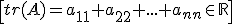
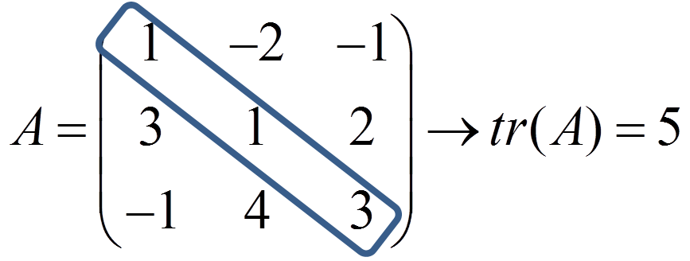
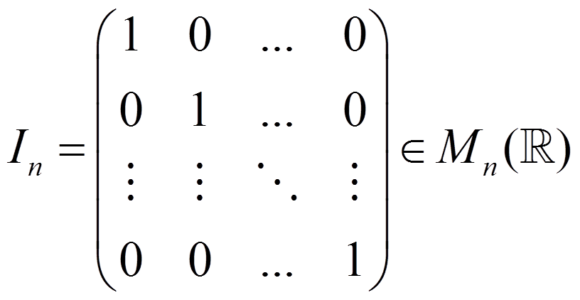
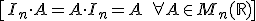
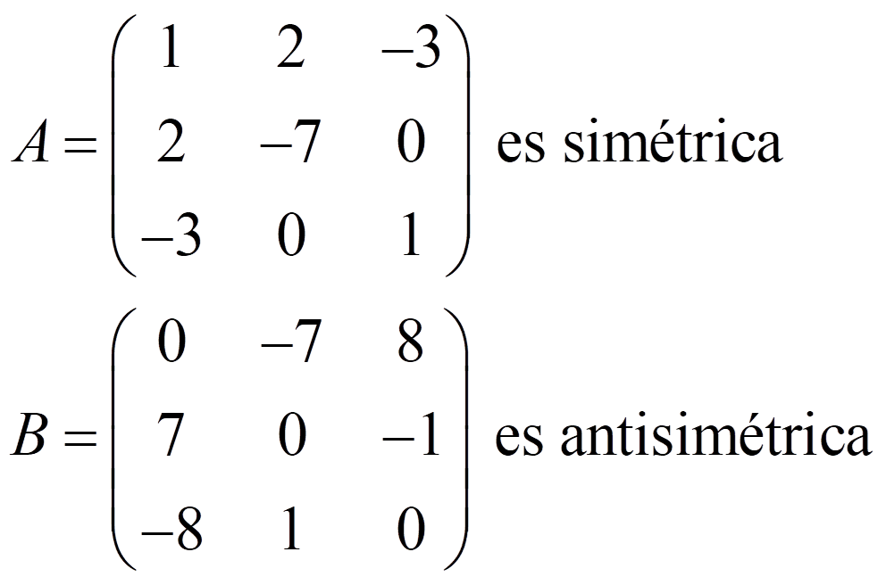
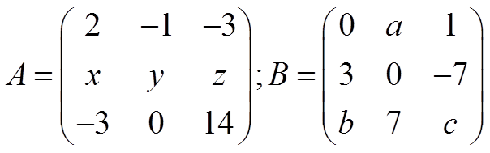

La diagonal (principal) de una matriz cuadrada está formada por los elementos a11, a22, …,ann. La traza es la suma de esos elementos:

Ejemplo:

La matriz identidad es:

y verifica que es el elemento neutro de la multiplicación de matrices, es decir:

Una matriz cuadrada se dice que es simétrica si At = A, y antisimétrica si At = -A
Ejemplos:

Ejercicio. Sean:

a) Calcula sus trazas
b) Encuentra x, y ,z que hagan que A sea simétrico
c) Encuentra a, b y c que hagan que B sea antisimétrica
Soluciones: a) tr(A) = y + 16, tr(B) = c; b) x = -1, y € R, z = 0; c) a = -3, b = -1, c = 0